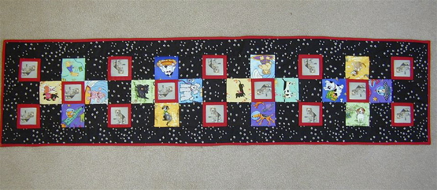

<--Previous Up Next-->

Huxley and Friends
Huxley and Friends became an idea when my son and daughter in law saw
a quilt made for grand daughter Daphne who was born in the Chinese year of the dog. It is one of the afterthought runners that boosted the 12 to 14. Huxley walked with his owners, and was photographed with hearts, all over San Francisco as part of a heart walk fund
raiser, chronicled on his web site.
We downloaded his picture from that site and printed it on fabric. I then framed those in red to set them off and combined them with
squares cut from leftovers from Daphne's quilt. This runner was a perfect example of why a quilter needs a good stash. After the squares were ready I needed a background and auditioned several fabrics "on loan" from a quilting friend. Of course the one we liked best was the smallest piece and not enough to do the job. Fortunately a web search found it on eBay so the project could be completed happily.